Previous slide Next slide Toggle fullscreen Open presenter view
CEN429 Secure Programming · Week 5
Code Hardening: Java and Interpreted Languages
CEN429 Secure Programming — Week 5
Asst. Prof. Dr. Uğur CORUH · 16.10.2026
RTEU Computer Engineering · 2026-2027 Fall
CEN429 Secure Programming · Week 5
Today's plan (3 hours)
Hour
Section
Topic
1
0–3
Basic concepts · managed languages · CERT Java · the root of injection
2
4–9
SQL/command/path injection · deserialisation · XML/XXE · Python/JS
3
10–16
Bytecode · ProGuard/R8 · string obfuscation · Android · SBOM · project
RTEU Computer Engineering · 2026-2027 Fall
CEN429 Secure Programming · Week 5
Short history — managed languages and the gaps that remain
1995 — Java/JVM : most memory bugs end at the language level 1998 — SQL injection is documented · 2003 OWASP Top 10 2002 — ProGuard (later R8 ): because bytecode is easy to reverse2015 deserialisation · 2020–21 SolarWinds and Log4Shell → the SBOM era
The language solves memory bugs ; it does not solve injection or dependency risk .
RTEU Computer Engineering · 2026-2027 Fall
CEN429 Secure Programming · Week 5
Where does this week fit?
Week 4: C/C++ hardening (memory bugs).This week (5): Java/interpreted languages — most memory bugs are solved , but a new class appears: injection and dependency .The binary-protection side: ProGuard/R8 and SBOM .
RTEU Computer Engineering · 2026-2027 Fall
CEN429 Secure Programming · Week 5
Learning outcome
This week is about LO.3 / LO.4 .
By the end you will be able to:
Recognise and prevent the injection class (SQL, command, path, XML, deserialisation)
Obfuscate with ProGuard/R8 and write -keep rules
Produce an SBOM and manage dependency risk
RTEU Computer Engineering · 2026-2027 Fall
CEN429 Secure Programming · Week 5
Main idea
A managed language largely solves memory bugs; but data mixing with commands (injection) exists in every language.
Today we look at this common root and the language-specific defences.
RTEU Computer Engineering · 2026-2027 Fall
CEN429 Secure Programming · Week 5
0. Basic concepts (from scratch)
RTEU Computer Engineering · 2026-2027 Fall
CEN429 Secure Programming · Week 5
Why this section exists
This section assumes no prior knowledge .
We define, from scratch, the terms we will use for the rest of the week.
If you do not know a term, read here first.
The sections that follow build on top of these terms.
RTEU Computer Engineering · 2026-2027 Fall
CEN429 Secure Programming · Week 5
What is a managed language?
Managed language: a language that manages memory automatically (Java, C#, Python, JS).The programmer does not call malloc/free; the garbage collector (GC) handles it.
→ most memory bugs (overflow, UAF) disappear .
RTEU Computer Engineering · 2026-2027 Fall
CEN429 Secure Programming · Week 5
The JVM and bytecode
JVM (Java Virtual Machine): the virtual machine that runs Java.Bytecode: the intermediate form Java source is compiled into (.class files).Bytecode is machine-independent; the JVM executes it.
RTEU Computer Engineering · 2026-2027 Fall
CEN429 Secure Programming · Week 5
The garbage collector (GC)
GC (Garbage Collector): automatically cleans up objects that are no longer used.The programmer never frees memory by hand.
This is why UAF/double free is almost nonexistent in Java.
RTEU Computer Engineering · 2026-2027 Fall
CEN429 Secure Programming · Week 5
What is injection?
Injection: user data being interpreted as a command .Example: text entered as a username leaking into a SQL query as a command.
The main theme of this week.
RTEU Computer Engineering · 2026-2027 Fall
CEN429 Secure Programming · Week 5
SQL and databases
SQL: a database query language (SELECT ... WHERE ...).The application puts user input into the query.
If put in wrong → SQL injection .
RTEU Computer Engineering · 2026-2027 Fall
CEN429 Secure Programming · Week 5
Parameterised query
Parameterised query (prepared statement): the query skeleton is fixed; the data is supplied separately, as parameters .Data is never interpreted as a command.
The real fix against SQL injection.
RTEU Computer Engineering · 2026-2027 Fall
CEN429 Secure Programming · Week 5
Serialisation
Serialisation: converting an object to a byte sequence (to save or send it).Deserialisation: converting the bytes back into an object.Deserialising untrusted bytes is dangerous (code execution).
RTEU Computer Engineering · 2026-2027 Fall
CEN429 Secure Programming · Week 5
XML and XXE
XML: a structured data format (built from tags).XXE (XML External Entity): abuse of XML's "external entity" feature → file reading, SSRF.External entities are disabled in the XML parser.
RTEU Computer Engineering · 2026-2027 Fall
CEN429 Secure Programming · Week 5
Path traversal
Path traversal: escaping outside the allowed folder with ../.Like files/../../etc/passwd.
Prevented with canonicalisation + a root check.
RTEU Computer Engineering · 2026-2027 Fall
CEN429 Secure Programming · Week 5
ProGuard and R8
ProGuard / R8: tools that shrink Java/Android bytecode and obfuscate names .R8 is Android's default tool.
Name obfuscation + dead-code elimination + shrinking.
RTEU Computer Engineering · 2026-2027 Fall
CEN429 Secure Programming · Week 5
The -keep rule
-keep:change this class's/method's name."Code called by name through reflection has to be kept.
A wrong -keep → either a crash or weak obfuscation.
RTEU Computer Engineering · 2026-2027 Fall
CEN429 Secure Programming · Week 5
What is reflection?
Reflection: finding and calling a class/method by its name, at run time .Class.forName("..."), getMethod("...").Obfuscation can break this → -keep is required.
RTEU Computer Engineering · 2026-2027 Fall
CEN429 Secure Programming · Week 5
What is an SBOM?
SBOM (Software Bill of Materials): the software's bill of materials — which libraries, which versions.When a vulnerability is disclosed in a library, it answers "are we affected?" quickly .
Formats: CycloneDX, SPDX.
RTEU Computer Engineering · 2026-2027 Fall
CEN429 Secure Programming · Week 5
Dependency
Dependency: the external libraries your project uses.Even if your own code is secure, a flaw in a dependency affects you.
Supply-chain security.
RTEU Computer Engineering · 2026-2027 Fall
CEN429 Secure Programming · Week 5
Now we are ready
Terms:
managed language · JVM/bytecode · GC · injection · SQL/parameterised query · serialisation · XML/XXE · path traversal · ProGuard/R8 · -keep · reflection · SBOM · dependency
Now: what do managed languages solve, and what do they not solve?
RTEU Computer Engineering · 2026-2027 Fall
CEN429 Secure Programming · Week 5
1. Managed languages and the root of injection
RTEU Computer Engineering · 2026-2027 Fall
CEN429 Secure Programming · Week 5
What does a managed language solve?
Automatic memory management (GC) → overflow, UAF, double free are largely gone .
Array access is bounds-checked → ArrayIndexOutOfBounds (a crash, not exploitation).
Type safety is stricter.
RTEU Computer Engineering · 2026-2027 Fall
CEN429 Secure Programming · Week 5
What does a managed language NOT solve?
Injection (data = command) — exists in every language.Logic errors , authorisation errors.Dependency vulnerabilities.Deserialisation attacks.
Memory bugs went down; the new front is injection and the supply chain.
RTEU Computer Engineering · 2026-2027 Fall
CEN429 Secure Programming · Week 5
Managed language: solves / does not solve — diagram
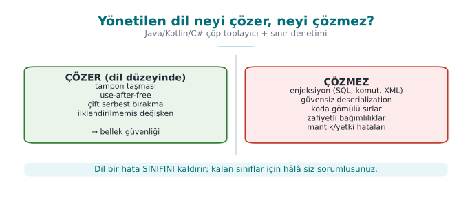
RTEU Computer Engineering · 2026-2027 Fall
CEN429 Secure Programming · Week 5
SEI CERT Oracle Java
A separate rule book for Java (CERT Oracle Coding Standard for Java).
Same structure: noncompliant example + compliant solution + risk.
Sample areas: injection, serialisation, concurrency, sensitive data.
RTEU Computer Engineering · 2026-2027 Fall
CEN429 Secure Programming · Week 5
CERT Oracle Java — diagram
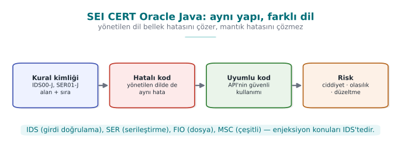
RTEU Computer Engineering · 2026-2027 Fall
CEN429 Secure Programming · Week 5
SEI CERT · rules touching this week
Prefix
Category
Rule (example)
IDSInput validation
IDS00-J SQL · IDS07-J Runtime.exec · IDS16/17-J XML
FIOInput/output
FIO16-J: canonicalise path names
SERSerialisation
SER12-J: do not deserialise untrusted data
MSCMiscellaneous
MSC03-J: do not embed sensitive information in code
ERRError handling
ERR01-J: do not leak sensitive information in an exception
IDs end with the -J suffix.
RTEU Computer Engineering · 2026-2027 Fall
CEN429 Secure Programming · Week 5
Sensitive data in Java
Java String is immutable → it cannot be erased from memory.
For a password/key use char[], and fill it (Arrays.fill) once you are done.
The GC does not guarantee when it will collect.
RTEU Computer Engineering · 2026-2027 Fall
CEN429 Secure Programming · Week 5
The common root of injection
Injection = data mixing with command .
User data goes to an interpreter (SQL, shell, XML) as a command .
The root is the same; the target (SQL/shell/XML) changes.
RTEU Computer Engineering · 2026-2027 Fall
CEN429 Secure Programming · Week 5
The root of injection — data or code? — diagram
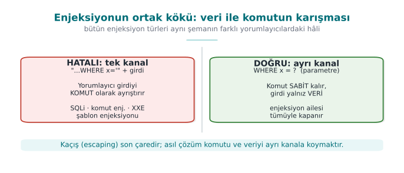
RTEU Computer Engineering · 2026-2027 Fall
CEN429 Secure Programming · Week 5
The common root of the fix
The same principle in every injection type:
Separate data from code (a parameterised API).Never embed data into a command via string concatenation .
Allow list + context-appropriate escaping (last resort).
RTEU Computer Engineering · 2026-2027 Fall
CEN429 Secure Programming · Week 5
One channel or two channels? — table
Interpreter
One channel (wrong)
Two channels (correct)
SQL engine
"...WHERE name='" + name + "'"PreparedStatement + ?
Shell
exec("sh -c '...' " + host)ProcessBuilder(...) — no shell
File system
new File(root, request)Canonicalise + root check
XML
Building XML by string concatenation
Building elements with a DOM/StAX API
Same principle, four different interpreters.
RTEU Computer Engineering · 2026-2027 Fall
CEN429 Secure Programming · Week 5
Injection families (today)
SQL injection
Command injection
Path traversal
Deserialisation
XML/XXE, templates, XSS
All share the same root and the same fix logic.
RTEU Computer Engineering · 2026-2027 Fall
CEN429 Secure Programming · Week 5
Rule of this section
A managed language solves the memory bug; it does not solve injection .
The root of injection is always the same: data = command.
The fix is always the same: separate data from code.
We will now see this principle applied to each injection type in turn.
RTEU Computer Engineering · 2026-2027 Fall
CEN429 Secure Programming · Week 5
Section 1 — quick check
Which error class does a managed language largely solve?
What does it not solve?
What is the common root of injection?
RTEU Computer Engineering · 2026-2027 Fall
CEN429 Secure Programming · Week 5
Section 1 — answers
Memory-safety bugs (buffer overflow, use-after-free, double/dangling pointer) — through the GC + bounds checking.Logic/injection/authorisation bugs, unsafe deserialisation, weak cryptography, dependency flaws — these are above the language, unsolved.Untrusted DATA mixing with CODE/command in the same channel; the interpreter parses the data as a command .
RTEU Computer Engineering · 2026-2027 Fall
CEN429 Secure Programming · Week 5
2. SQL injection
RTEU Computer Engineering · 2026-2027 Fall
CEN429 Secure Programming · Week 5
Buggy code
String q = "SELECT * FROM kul WHERE ad = '" + ad + "'" ;
stmt.executeQuery(q);
What if ad contains a quote and SQL?
RTEU Computer Engineering · 2026-2027 Fall
CEN429 Secure Programming · Week 5
Attack · example
The user enters this as ad:
' OR '1'='1
The query becomes:
SELECT * FROM kul WHERE ad = '' OR '1' = '1'
'1'='1' is always true → all rows are returned.
RTEU Computer Engineering · 2026-2027 Fall
CEN429 Secure Programming · Week 5
Why did it happen?
ad was concatenated into the query text .The quote closed the data and moved into the command part.
Data and command got mixed .
RTEU Computer Engineering · 2026-2027 Fall
CEN429 Secure Programming · Week 5
SQL injection step by step — diagram
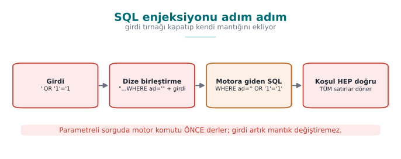
RTEU Computer Engineering · 2026-2027 Fall
CEN429 Secure Programming · Week 5
Correct · parameterised query
PreparedStatement ps =
con.prepareStatement("SELECT * FROM kul WHERE ad = ?" );
ps.setString(1 , ad);
ps.executeQuery();
? is a parameter ; ad is never interpreted as a command.
RTEU Computer Engineering · 2026-2027 Fall
CEN429 Secure Programming · Week 5
Why does it work?
The query skeleton is sent (compiled) to the database beforehand .
ad is bound afterwards as data .Even if it contains a quote, it stays data.
RTEU Computer Engineering · 2026-2027 Fall
CEN429 Secure Programming · Week 5
Other layers
Least privilege: the application's DB user should do only what is needed.Input validation: an allow list, regardless.If you use an ORM , use its parameterised API too (not string concatenation).
RTEU Computer Engineering · 2026-2027 Fall
CEN429 Secure Programming · Week 5
⚠️ Escaping is the last resort
Manually escaping quotes is error-prone ; every DB is different.
The always -first priority is a parameterised query.
Escaping only where parameters are not possible, and carefully.
RTEU Computer Engineering · 2026-2027 Fall
CEN429 Secure Programming · Week 5
SQL injection · rule of this section
Never build a query with string concatenation.Always use a parameterised query (PreparedStatement, ?).Use an allow list for identifiers such as column/table names.
Escaping only as a last resort.
RTEU Computer Engineering · 2026-2027 Fall
CEN429 Secure Programming · Week 5
3. Command injection
RTEU Computer Engineering · 2026-2027 Fall
CEN429 Secure Programming · Week 5
Shell or no shell — diagram
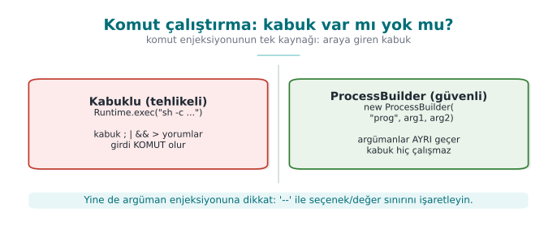
RTEU Computer Engineering · 2026-2027 Fall
CEN429 Secure Programming · Week 5
Buggy code
Runtime.getRuntime().exec("ping " + host);
What if host contains a shell metacharacter?
RTEU Computer Engineering · 2026-2027 Fall
CEN429 Secure Programming · Week 5
Attack · example
As host:
example.com; rm -rf veri
The shell runs this as two commands : ping and rm.
(The example is synthetic; never run it.)
RTEU Computer Engineering · 2026-2027 Fall
CEN429 Secure Programming · Week 5
Why did it happen?
The command was handed to a shell as text.
;, |, && are command separators in the shell.Data got mixed into the command line.
RTEU Computer Engineering · 2026-2027 Fall
CEN429 Secure Programming · Week 5
Correct · argument array
new ProcessBuilder ("ping" , "-c" , "1" , host).start();
No shell ; host is a single argument .Metacharacters are not interpreted.
RTEU Computer Engineering · 2026-2027 Fall
CEN429 Secure Programming · Week 5
Additional rules
Where possible, do not run an external command at all; use a library API.
If you must: a fixed path, an argument array, an allow list.
Similar to ENV33-C: calling system()/a shell.
RTEU Computer Engineering · 2026-2027 Fall
CEN429 Secure Programming · Week 5
Command injection · rule of this section
Where possible, never run an external command.
If you must: a shell-less argument array (ProcessBuilder).
A fixed path + allow list; watch input starting with - (argument injection).
RTEU Computer Engineering · 2026-2027 Fall
CEN429 Secure Programming · Week 5
4. Path traversal
RTEU Computer Engineering · 2026-2027 Fall
CEN429 Secure Programming · Week 5
Two steps that close off path traversal — diagram
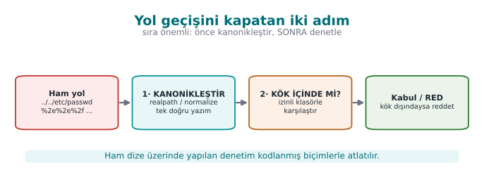
RTEU Computer Engineering · 2026-2027 Fall
CEN429 Secure Programming · Week 5
Buggy code
File f = new File ("yuklenen/" + adi);
What if adi contains ../?
RTEU Computer Engineering · 2026-2027 Fall
CEN429 Secure Programming · Week 5
Attack · example
As adi:
../../etc/passwd
Result: yuklenen/../../etc/passwd → outside the allowed folder.
RTEU Computer Engineering · 2026-2027 Fall
CEN429 Secure Programming · Week 5
Why did it happen?
adi was appended directly into the file path.The ../ sequence was read by the interpreter (the file system) as "go up a folder."
There was no check: whether the folder was left was never even asked.
RTEU Computer Engineering · 2026-2027 Fall
CEN429 Secure Programming · Week 5
Correct · canonicalise + root check
Path kok = Paths.get("yuklenen" ).toRealPath();
Path hedef = kok.resolve(adi).normalize().toRealPath();
if (!hedef.startsWith(kok)) throw new SecurityException ();
Is the canonical path inside the root ? If not, reject.
RTEU Computer Engineering · 2026-2027 Fall
CEN429 Secure Programming · Week 5
Why does it work?
First the path is turned canonical (single, definite).
Then we check whether the canonical path is inside the root.
../, an encoded form (..%2f), or a symbolic link — all of them land on the same real path after canonicalisation; none of them can escape the check.
RTEU Computer Engineering · 2026-2027 Fall
CEN429 Secure Programming · Week 5
Restrict the file name to an allow list ([a-zA-Z0-9_.-]).
Symbolic links (symlink) are resolved by canonicalisation.
Do not make a user name directly into a file name.
RTEU Computer Engineering · 2026-2027 Fall
CEN429 Secure Programming · Week 5
Path traversal · rule of this section
Never trust the raw string (contains("..") is not enough).First canonicalise , then check whether it is inside the root .
Resolve symbolic links too (toRealPath()); repeat the check after the file is opened as well.
RTEU Computer Engineering · 2026-2027 Fall
CEN429 Secure Programming · Week 5
Three injections · common lesson
Type
Wrong
Correct
SQL
String concatenation
Parameterised query
Command
Text to the shell
Argument array
Path
Concatenating ../
Canonicalise + root check
Same root: separate data from code/command .
RTEU Computer Engineering · 2026-2027 Fall
CEN429 Secure Programming · Week 5
Sections 2–4 — quick check
Why does ' OR '1'='1 return all rows?
Why is a ProcessBuilder argument array safe?
Which two steps close off path traversal?
RTEU Computer Engineering · 2026-2027 Fall
CEN429 Secure Programming · Week 5
Sections 2–4 — answers
Once joined into the string it makes the WHERE condition always true → all rows (data was parsed as code).
Arguments pass to the program, not the shell , one by one; there is no metacharacter interpretation (; |) → command injection is closed off.
(1) Convert to a canonical path (realpath/normalise), (2) verify it is inside the allowed root directory (an allow list). Never put user input directly into a path.
RTEU Computer Engineering · 2026-2027 Fall
CEN429 Secure Programming · Week 5
5. Unsafe deserialisation
RTEU Computer Engineering · 2026-2027 Fall
CEN429 Secure Programming · Week 5
Buggy code
Object o = new ObjectInputStream (giris).readObject();
What if giris comes from an untrusted source?
RTEU Computer Engineering · 2026-2027 Fall
CEN429 Secure Programming · Week 5
Deserialisation gadget chain — diagram
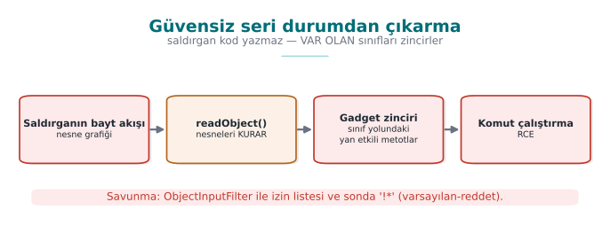
RTEU Computer Engineering · 2026-2027 Fall
CEN429 Secure Programming · Week 5
The problem
Turning untrusted bytes into an object is dangerous .
In Java, ObjectInputStream.readObject() can run code while unpacking (gadget chains).
Result: remote code execution.
RTEU Computer Engineering · 2026-2027 Fall
CEN429 Secure Programming · Week 5
Why is this so bad?
Objects' constructors/methods run during unpacking.
If suitable libraries (gadgets) are present, they can be chained to run commands.
Input that looks like "just data" behaves like code .
RTEU Computer Engineering · 2026-2027 Fall
CEN429 Secure Programming · Week 5
Correct · best: do not do it at all
Do not deserialise untrusted data with native serialisation .
Use a JSON/data format + a strict schema instead.
Read only the fields you expect.
RTEU Computer Engineering · 2026-2027 Fall
CEN429 Secure Programming · Week 5
If you must · filter
ObjectInputFilter f = ObjectInputFilter.Config
.createFilter("com.uygulama.*;!*" );
ois.setObjectInputFilter(f);
Allow list : only the expected classes.Also set a depth/size limit (against DoS).
RTEU Computer Engineering · 2026-2027 Fall
CEN429 Secure Programming · Week 5
Deserialisation · rule of this section
Deserialising an untrusted byte stream hands the attacker the power to choose a class .
Best: do not do it at all (JSON + a strict schema).
If you must: an allow-list filter , a depth/size limit.
RTEU Computer Engineering · 2026-2027 Fall
CEN429 Secure Programming · Week 5
6. XML, templates, XSS
RTEU Computer Engineering · 2026-2027 Fall
CEN429 Secure Programming · Week 5
XXE · the problem
XML lets you define an external entity ; the parser resolves it.
An attacker can use this to read files or make the server issue a request (SSRF).
RTEU Computer Engineering · 2026-2027 Fall
CEN429 Secure Programming · Week 5
XXE — diagram
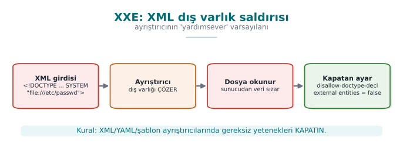
RTEU Computer Engineering · 2026-2027 Fall
CEN429 Secure Programming · Week 5
XXE · correct
dbf.setFeature(
"http://apache.org/xml/features/disallow-doctype-decl" , true );
Disable external entities , reject DOCTYPE.A one-line setting in most libraries.
RTEU Computer Engineering · 2026-2027 Fall
CEN429 Secure Programming · Week 5
Template injection (SSTI)
Handing user input to a template engine as the template itself .
The engine can run it like code.
Rule: user input is data , the template is fixed .
RTEU Computer Engineering · 2026-2027 Fall
CEN429 Secure Programming · Week 5
XSS (briefly)
XSS: user data leaking into a web page as HTML/JS .Fix: context-appropriate output encoding (HTML-encode), CSP.
Same root again: data ≠ code.
RTEU Computer Engineering · 2026-2027 Fall
CEN429 Secure Programming · Week 5
XML/template/XSS · rule of this section
Know which feature of the interpreter is turned on , and disable what is not needed.
XML: external entities + DOCTYPE disabled.
Templates: user data is only a variable , never the template itself.
HTML: encode output context-appropriately .
RTEU Computer Engineering · 2026-2027 Fall
CEN429 Secure Programming · Week 5
7. The same bugs in Python and JavaScript
RTEU Computer Engineering · 2026-2027 Fall
CEN429 Secure Programming · Week 5
The same bugs in interpreted languages — diagram
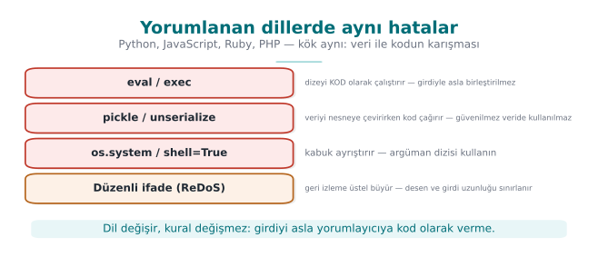
RTEU Computer Engineering · 2026-2027 Fall
CEN429 Secure Programming · Week 5
Same root, different language
Injection exists in every language: Python os.system, JS child_process.
The fix is the same: an argument array, a parameterised query.
RTEU Computer Engineering · 2026-2027 Fall
CEN429 Secure Programming · Week 5
Python · examples
os.system("cmd " + x) → command injection; use subprocess.run([...]).eval(input) / pickle.loads(untrusted) → never with untrusted data.SQL: parameterised (cursor.execute("... ?", (x,))).
RTEU Computer Engineering · 2026-2027 Fall
CEN429 Secure Programming · Week 5
Python · eval example (code)
deger = eval (girdi)
import ast
deger = ast.literal_eval(girdi)
deger = int (girdi)
Rule: user data must never reach eval.
RTEU Computer Engineering · 2026-2027 Fall
CEN429 Secure Programming · Week 5
ReDoS (regular expression DoS)
A bad regex can spend exponential time on certain input.
An attacker can use this to lock up the CPU.
Fix: a safe regex, an input-length limit, a timeout.
RTEU Computer Engineering · 2026-2027 Fall
CEN429 Secure Programming · Week 5
ReDoS · a concrete example
Desen: ^(a+)+$
Girdi: "aaaaaaaaaaaaaaaaaaaaaaaaaaaaa!"
The engine tries millions of paths to prove there is no match.
A single request locks the CPU for seconds/minutes (CWE-1333).
RTEU Computer Engineering · 2026-2027 Fall
CEN429 Secure Programming · Week 5
JavaScript · prototype pollution
Prototype pollution: an attacker corrupts a property shared by all objects, through __proto__.Unexpected behaviour, authorisation bypass.
Fix: safe merging, Object.create(null), up-to-date libraries.
RTEU Computer Engineering · 2026-2027 Fall
CEN429 Secure Programming · Week 5
Interpreted languages · common rule
eval, exec, pickle, dynamic require → do not use with untrusted data.Input validation + a parameterised API + up-to-date dependencies.
RTEU Computer Engineering · 2026-2027 Fall
CEN429 Secure Programming · Week 5
Sections 5–9 — quick check
Why can unsafe deserialisation run code?
Which setting disables XXE?
What is ReDoS, and how is it mitigated?
RTEU Computer Engineering · 2026-2027 Fall
CEN429 Secure Programming · Week 5
Sections 5–9 — answers
While an object is being constructed, classes' side-effecting methods (readObject/gadget chain ) fire → an attacker builds a flow using the object graph.
The parser setting that disables external entities and DOCTYPE (disallow-doctype-decl, external entities off).
ReDoS: a catastrophic-backtracking regex; bad input → exponential time → the CPU locks up. Mitigation: a linear-time engine (RE2), avoid nested quantifiers, a length/time limit.
RTEU Computer Engineering · 2026-2027 Fall
CEN429 Secure Programming · Week 5
8. Bytecode and decompilation
RTEU Computer Engineering · 2026-2027 Fall
CEN429 Secure Programming · Week 5
Bytecode vs machine code — diagram
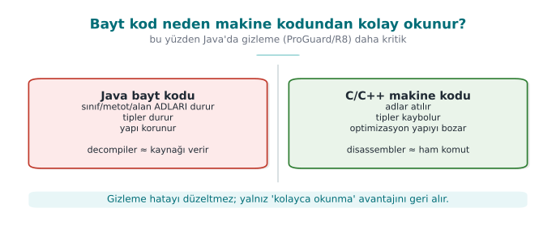
RTEU Computer Engineering · 2026-2027 Fall
CEN429 Secure Programming · Week 5
Java bytecode is easy to read
.class/.jar bytecode decompiles back very close to the source.Tools: javap (disassembly), JD-GUI/CFR/Procyon (decompilation).
Names, strings, structure are largely visible .
RTEU Computer Engineering · 2026-2027 Fall
CEN429 Secure Programming · Week 5
javap examplejavap -c -p Uygulama.class
Method names, calls, constants are visible.
This is exactly why obfuscation is even more necessary in Java.
RTEU Computer Engineering · 2026-2027 Fall
CEN429 Secure Programming · Week 5
javap output — what is visible?private static final java.lang.String GECERLI_PIN;
public boolean pinDogru(java.lang.String);
Code:
0: aload_1
1: ldc #7 // String 4729
3: invokevirtual #9 // String.equals
6: ireturn
There is no source code, but the constant (4729), the names (GECERLI_PIN, pinDogru) and the logic ("compare the input against this constant") are plainly visible.
RTEU Computer Engineering · 2026-2027 Fall
CEN429 Secure Programming · Week 5
Why is it easier than C?
Bytecode is high-level and carries type information.
Variable/method names are mostly preserved.
→ reverse engineering is cheap; obfuscation is essential.
RTEU Computer Engineering · 2026-2027 Fall
CEN429 Secure Programming · Week 5
⚠️ There are no secrets on the client
Obfuscation makes this harder , but it does not really hide the secret.
A key/password that does not have to live on the client → keep it on the server .
A secret that has to live on the client needs whitebox cryptography (Week 11).
RTEU Computer Engineering · 2026-2027 Fall
CEN429 Secure Programming · Week 5
9. ProGuard and R8
RTEU Computer Engineering · 2026-2027 Fall
CEN429 Secure Programming · Week 5
R8 and the measurement steps — diagram
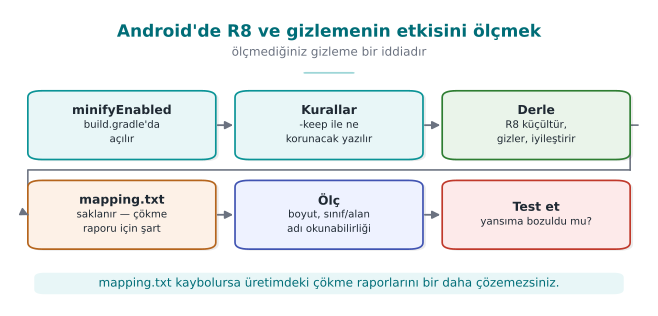
RTEU Computer Engineering · 2026-2027 Fall
CEN429 Secure Programming · Week 5
What do ProGuard/R8 do?
Three jobs:
Shrinking: drops unused code.Optimisation: simplifies the code.Obfuscation: makes names meaningless (a, b, c).
RTEU Computer Engineering · 2026-2027 Fall
CEN429 Secure Programming · Week 5
ProGuard/R8 · four stages — table
Stage
What it does
Security contribution
Shrinking
Drops unused code
Attack surface shrinks
Optimisation
Inlining, constant folding
Structure moves away from the source
Obfuscation
Turns names into a, b, c
Meaningful names disappear
Preverification
Verification info for older JVMs
—
RTEU Computer Engineering · 2026-2027 Fall
CEN429 Secure Programming · Week 5
Name obfuscation example
LisansDenetleyici.dogrula() → a.b()
Meaningful names disappear.
The map gets harder for a reverse engineer.
Removing dead code shrinks the binary.
RTEU Computer Engineering · 2026-2027 Fall
CEN429 Secure Programming · Week 5
Why is -keep needed?
Code called by name through reflection (an API, entry points, JNI) must be kept.
If obfuscation changes the name, the call breaks .
-keep class com.uygulama.Api { public *; }
RTEU Computer Engineering · 2026-2027 Fall
CEN429 Secure Programming · Week 5
The -keep balance — diagram
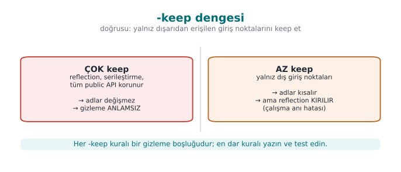
RTEU Computer Engineering · 2026-2027 Fall
CEN429 Secure Programming · Week 5
The -keep balance
Too little -keep: the application crashes (reflection breaks).Too much -keep: obfuscation is weakened (everything stays exposed).Keep only the entry points that are genuinely required .
RTEU Computer Engineering · 2026-2027 Fall
CEN429 Secure Programming · Week 5
The mapping file
R8 produces a mapping.txt: obfuscated name → real name.
It is kept secret (not shipped), but it is retained to decode crash traces.
Archived together with the version identifier.
RTEU Computer Engineering · 2026-2027 Fall
CEN429 Secure Programming · Week 5
Mapping file · example (mapping.txt)
com.ornek.odeme.KartYoneticisi -> com.ornek.a:
android.content.Context baglam -> a
boolean varsayilanKartiAyarla(java.lang.String) -> b
Old name → new name. This file completely undoes the obfuscation.
RTEU Computer Engineering · 2026-2027 Fall
CEN429 Secure Programming · Week 5
ProGuard/R8 · rule of this section
Shrink + optimise + obfuscate; it does not obfuscate strings .
-keep only for what is genuinely called through reflection/JNI.mapping.txt is a secret : keep it, do not distribute it.
RTEU Computer Engineering · 2026-2027 Fall
CEN429 Secure Programming · Week 5
10. String obfuscation and reflection
RTEU Computer Engineering · 2026-2027 Fall
CEN429 Secure Programming · Week 5
String obfuscation and dynamic invocation — diagram
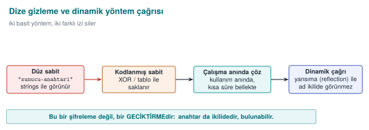
RTEU Computer Engineering · 2026-2027 Fall
CEN429 Secure Programming · Week 5
Strings are exposed in Java
Constant strings inside .class appear in the clear (strings, a decompiler).
Sensitive URLs, key fragments, messages leak.
RTEU Computer Engineering · 2026-2027 Fall
CEN429 Secure Programming · Week 5
String obfuscation
Strings are encoded at build time, decoded at use.
Same rule as Week 4: it stops strings, it does not keep a secret .
The decoding code is also in the bytecode → limited protection.
RTEU Computer Engineering · 2026-2027 Fall
CEN429 Secure Programming · Week 5
⚠️ Reflection conflicts with obfuscation
A call by name (getMethod("dogrula")) breaks after obfuscation.
Fix: either -keep, or drop reflection and call directly.
Reducing reflection is good for both security and obfuscation.
RTEU Computer Engineering · 2026-2027 Fall
CEN429 Secure Programming · Week 5
11. Android R8 and measurement
RTEU Computer Engineering · 2026-2027 Fall
CEN429 Secure Programming · Week 5
R8 on Android
R8 is the default shrinker/obfuscator of the Android build.
minifyEnabled true + proguard-rules.pro.Produces DEX (Android bytecode).
RTEU Computer Engineering · 2026-2027 Fall
CEN429 Secure Programming · Week 5
Turning R8 on for the release build
android { buildTypes { release {
minifyEnabled true
shrinkResources true
proguardFiles getDefaultProguardFile('proguard-android-optimize.txt' ),
'proguard-rules.pro'
}}}
The debug build is not obfuscated ; verify that the shipped build is the release one.
RTEU Computer Engineering · 2026-2027 Fall
CEN429 Secure Programming · Week 5
Measuring the effect of obfuscation
Before/after obfuscation:
the ratio of meaningful names
the count of plain-text sensitive strings
APK size
Measure it and write it into S9 (the measurement logic from Week 9).
RTEU Computer Engineering · 2026-2027 Fall
CEN429 Secure Programming · Week 5
Measurement table — extended
Metric
Expected change
Number of classes/methods
Decreases with shrinking
Meaningful-name ratio
Drops sharply with obfuscation
Plain-text sensitive strings
Goes to zero with string obfuscation
Package size
Decreases with shrinking
Number of log calls
Zero in the release
Time to locate a check
Increases (human trial)
RTEU Computer Engineering · 2026-2027 Fall
CEN429 Secure Programming · Week 5
Static analysis for Java
SpotBugs, Error Prone, SonarQube.
Checks close to the CERT Java rules.
On every merge, in CI.
RTEU Computer Engineering · 2026-2027 Fall
CEN429 Secure Programming · Week 5
Sections 8–13 — quick check
Why is Java bytecode easier to read than C?
What is the -keep balance?
Why does reflection conflict with obfuscation?
RTEU Computer Engineering · 2026-2027 Fall
CEN429 Secure Programming · Week 5
Sections 8–13 — answers
Bytecode is high-level ; type and name metadata (class/field/method) are preserved → a decompiler produces near-source output. C compiles to machine code, discarding names.
The -keep balance: too much keep → obfuscation is weak; too little keep → reflection/serialisation breaks. Keep only the external entry points .Reflection calls by string name; once the obfuscator renames it, the string no longer matches → a run-time error. Those names need to be kept (a gap in the obfuscation).
RTEU Computer Engineering · 2026-2027 Fall
CEN429 Secure Programming · Week 5
12. Dependency security and SBOM
RTEU Computer Engineering · 2026-2027 Fall
CEN429 Secure Programming · Week 5
The problem · supply chain
Even if your own code is flawless, a flaw in a library you use affects you.
A modern application contains hundreds of dependencies.
"Which version do I have?" is a critical question.
RTEU Computer Engineering · 2026-2027 Fall
CEN429 Secure Programming · Week 5
Real examples
Log4Shell (Log4j): a single library flaw affected millions of systems.
A malicious package (typosquatting): a fake package with a similar name.
An unmaintained/abandoned dependency.
RTEU Computer Engineering · 2026-2027 Fall
CEN429 Secure Programming · Week 5
Log4Shell · a concrete example (December 2021)
A specific expression logged by Log4j 2 loaded and ran a class from a remote address.
CVE-2021-44228, CVSS 10.0 (the highest score).
The real crisis was not applying the patch: it was the question of which system had which version .
RTEU Computer Engineering · 2026-2027 Fall
CEN429 Secure Programming · Week 5
What is an SBOM? (recap)
The software's bill of materials : which component, which version, which licence.
When a flaw is announced, "am I affected?" is answered quickly .
RTEU Computer Engineering · 2026-2027 Fall
CEN429 Secure Programming · Week 5
CycloneDX (OWASP) — security-focused, widely used.SPDX (Linux Foundation) — strong on licensing too.Generated automatically by tools (during the build step).
RTEU Computer Engineering · 2026-2027 Fall
CEN429 Secure Programming · Week 5
A CycloneDX example (JSON, synthetic)
{
"bomFormat" : "CycloneDX" ,
"components" : [ {
"type" : "library" , "name" : "ornek-json" , "version" : "1.2.0" ,
"purl" : "pkg:maven/com.ornek/ornek-json@1.2.0"
} ]
}
Every component: name, version, purl (an ecosystem-independent, uniform identifier), a hash value.
RTEU Computer Engineering · 2026-2027 Fall
CEN429 Secure Programming · Week 5
What is VEX?
VEX (Vulnerability Exploitability eXchange): shares "I have this flaw, but it is not exploitable " information.Reduces noise: not every CVE is a panic.
Accompanies the SBOM.
RTEU Computer Engineering · 2026-2027 Fall
CEN429 Secure Programming · Week 5
Dependency management rules
Pin versions; do not pull "latest" at random.Scan for known vulnerabilities (dependency-check, npm audit, pip-audit).
A safe update process; apply critical patches fast.
RTEU Computer Engineering · 2026-2027 Fall
CEN429 Secure Programming · Week 5
SBOM generation · example flow
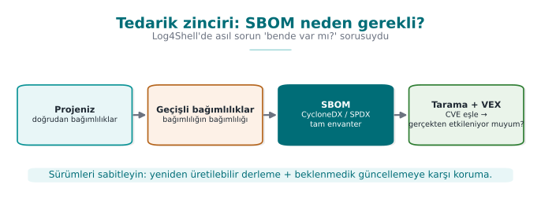
Each release's SBOM is stored with its release identifier.
RTEU Computer Engineering · 2026-2027 Fall
CEN429 Secure Programming · Week 5
Link to the project
S13: a secure development process + SBOM.An up-to-date SBOM and dependency scan for every release.
Handed-off requirements: "safe updates" belong to the upstream application (Week 13).
RTEU Computer Engineering · 2026-2027 Fall
CEN429 Secure Programming · Week 5
SBOM · rule of this section
Even if your own code is flawless, your dependency's flaw affects you .
SBOM = the bill of materials; VEX = the answer to "am I genuinely affected?"
Pin the version, scan continuously, apply the critical patch fast.
RTEU Computer Engineering · 2026-2027 Fall
CEN429 Secure Programming · Week 5
Section 14 — quick check
What is an SBOM good for?
Why does VEX reduce noise?
Why do we pin dependency versions?
RTEU Computer Engineering · 2026-2027 Fall
CEN429 Secure Programming · Week 5
Section 14 — answers
SBOM = a component/dependency inventory; when a new flaw appears it answers "do I have it?" quickly .VEX states whether the flaw is genuinely exploitable in the product; unaffected ones are marked "not affected" → false alarms drop.A pinned version = a reproducible build + supply-chain security; it blocks an unexpected/malicious update.
RTEU Computer Engineering · 2026-2027 Fall
CEN429 Secure Programming · Week 5
Project and closing
RTEU Computer Engineering · 2026-2027 Fall
CEN429 Secure Programming · Week 5
Project · S9/S13 (the Java side)
[ ] Turn injection-prone spots into parameterised APIs (SQL, command, path).
[ ] A filter/schema if there is unsafe deserialisation.
[ ] Obfuscate with R8/ProGuard; -keep only the entry points that are needed.
[ ] String obfuscation; no sensitive string in strings/a decompiler.
[ ] Produce an SBOM + a dependency scan (S13).
RTEU Computer Engineering · 2026-2027 Fall
CEN429 Secure Programming · Week 5
Solved self-check
RTEU Computer Engineering · 2026-2027 Fall
CEN429 Secure Programming · Week 5
Question 1
Which error class does a managed language solve, and which does it not?
Answer: It largely solves memory bugs (overflow, UAF). It does not solve injection, logic/authorisation errors, dependency, and deserialisation attacks.
RTEU Computer Engineering · 2026-2027 Fall
CEN429 Secure Programming · Week 5
Question 2
Why does ' OR '1'='1 return all rows?
Answer: The input enters the query through string concatenation; the quote closes the data, and OR '1'='1' is always true. A parameterised query prevents this.
RTEU Computer Engineering · 2026-2027 Fall
CEN429 Secure Programming · Week 5
Question 3
How does ProcessBuilder prevent command injection?
Answer: It supplies arguments as an array without using a shell; metacharacters (;, |) are not interpreted, and the input stays a single argument.
RTEU Computer Engineering · 2026-2027 Fall
CEN429 Secure Programming · Week 5
Question 4
Which two steps close off path traversal?
Answer: Canonicalisation (normalize/toRealPath) + a root check (startsWith(kok)). Plus a file-name allow list.
RTEU Computer Engineering · 2026-2027 Fall
CEN429 Secure Programming · Week 5
Question 5
Why is unsafe deserialisation dangerous? The fix?
Answer: Object methods run while unpacking; code can be run through a gadget chain. Fix: a data format + schema instead of native serialisation; if you must, an ObjectInputFilter allow list.
RTEU Computer Engineering · 2026-2027 Fall
CEN429 Secure Programming · Week 5
Question 6
What is XXE, and which setting disables it?
Answer: Abuse of XML external entities (file reading/SSRF). The parser setting that disables external entities and DOCTYPE.
RTEU Computer Engineering · 2026-2027 Fall
CEN429 Secure Programming · Week 5
Question 7
What are ReDoS and prototype pollution?
Answer: ReDoS: a bad regex spending exponential time (DoS). Prototype pollution: corrupting all objects through __proto__ in JS. Both need input validation + a safe API.
RTEU Computer Engineering · 2026-2027 Fall
CEN429 Secure Programming · Week 5
Question 8
Why does Java bytecode need obfuscation more than most?
Answer: Bytecode is high-level and carries type and name information; it decompiles very close to the source. Names/strings appear in the clear.
RTEU Computer Engineering · 2026-2027 Fall
CEN429 Secure Programming · Week 5
Question 9
What is the -keep balance?
Answer: Too little -keep → reflection breaks, the application crashes. Too much → obfuscation is weakened. Only the entry points genuinely called through reflection are kept.
RTEU Computer Engineering · 2026-2027 Fall
CEN429 Secure Programming · Week 5
Question 10
Does string obfuscation keep a key secret in Java?
Answer: No. It stops strings/static scanning, but the decoded string is in the clear in memory, and the decoding code is in the bytecode. A key needs different protection.
RTEU Computer Engineering · 2026-2027 Fall
CEN429 Secure Programming · Week 5
Question 11
What are SBOM and VEX for?
Answer: An SBOM is the component list; when a flaw is announced it tells you quickly whether you are affected. VEX states whether the flaw is exploitable, reducing noise.
RTEU Computer Engineering · 2026-2027 Fall
CEN429 Secure Programming · Week 5
Question 12
What is the common root and fix of every injection type?
Answer: Root: data mixing with command. Fix: separating data from code (a parameterised/argument-array API), not building a command with string concatenation.
RTEU Computer Engineering · 2026-2027 Fall
CEN429 Secure Programming · Week 5
Summary: this week in one sentence
A managed language solves memory bugs, but injection exists in every language ; the fix is always separating data from the command,dependency/SBOM management.
RTEU Computer Engineering · 2026-2027 Fall
CEN429 Secure Programming · Week 5
Next week
Week 6 — RASP and run-time protection
Tamper/debugger detection, integrity checking, response policy and layered defence.
RTEU Computer Engineering · 2026-2027 Fall
CEN429 Secure Programming · Week 5
Appendix A · An injection from start to finish
RTEU Computer Engineering · 2026-2027 Fall
CEN429 Secure Programming · Week 5
Context · a login form
An application that logs a user in with a username and password.
String q = "SELECT * FROM kul WHERE ad='" + ad +
"' AND parola='" + p + "'" ;
Where is the mistake?
RTEU Computer Engineering · 2026-2027 Fall
CEN429 Secure Programming · Week 5
Into the ad field:
yonetici' --
-- starts a comment in SQL; everything after it is ignored.
RTEU Computer Engineering · 2026-2027 Fall
CEN429 Secure Programming · Week 5
Step 2 · what does the query become?
SELECT * FROM kul WHERE ad= 'yonetici'
The password check stayed inside the comment → an yonetici login with no password.
RTEU Computer Engineering · 2026-2027 Fall
CEN429 Secure Programming · Week 5
Step 3 · impact
Authentication was bypassed .
Further: reading other tables with UNION SELECT.
; DROP TABLE (if stacked queries are supported) — data loss.
RTEU Computer Engineering · 2026-2027 Fall
CEN429 Secure Programming · Week 5
Step 4 · the fix
PreparedStatement ps = con.prepareStatement(
"SELECT * FROM kul WHERE ad=? AND parola_ozet=?" );
ps.setString(1 , ad);
ps.setString(2 , ozetle(p));
ad and the password are now data ; -- has no effect.
RTEU Computer Engineering · 2026-2027 Fall
CEN429 Secure Programming · Week 5
Step 5 · layered defence
Never store a password in plain text: a hash + salt (Week 3).Least privilege: the DB user only has SELECT.Input validation: an allow list for the username.Logging/monitoring: failed login attempts.
RTEU Computer Engineering · 2026-2027 Fall
CEN429 Secure Programming · Week 5
Lesson
A single root: data got mixed with the command.
The real fix: a parameterised query.
But defence in depth at every layer.
RTEU Computer Engineering · 2026-2027 Fall
CEN429 Secure Programming · Week 5
Appendix B · A deserialisation mini case study
RTEU Computer Engineering · 2026-2027 Fall
CEN429 Secure Programming · Week 5
Scenario
An application deserialises a "session object" sent by the user using native serialisation:
Object o = new ObjectInputStream (giris).readObject();
RTEU Computer Engineering · 2026-2027 Fall
CEN429 Secure Programming · Week 5
What could happen?
The attacker prepares a gadget chain from libraries found on the classpath.
The chain runs while unpacking → command execution.
The input was thought to be "data," but it behaved like code.
RTEU Computer Engineering · 2026-2027 Fall
CEN429 Secure Programming · Week 5
JSON + a strict schema instead of native serialisation.Only the expected fields are read.
The object graph never "comes alive."
RTEU Computer Engineering · 2026-2027 Fall
CEN429 Secure Programming · Week 5
Fix 2 · if you must, filter
ois.setObjectInputFilter(ObjectInputFilter.Config
.createFilter("com.uygulama.Oturum;!*" ));
An allow list + a depth/size limit.
RTEU Computer Engineering · 2026-2027 Fall
CEN429 Secure Programming · Week 5
Case study · lesson
Turning untrusted data into a "live object" is risky.
Safest: never do it (use a data format).
If you must: a strict allow list.
RTEU Computer Engineering · 2026-2027 Fall
CEN429 Secure Programming · Week 5
Appendix C · Injection, language by language
RTEU Computer Engineering · 2026-2027 Fall
CEN429 Secure Programming · Week 5
The same bug, three languages
Danger
Java
Python
JS
Command
Runtime.exec(str)os.system(str)exec(str)
Safe
ProcessBuilder([...])subprocess.run([...])execFile([...])
RTEU Computer Engineering · 2026-2027 Fall
CEN429 Secure Programming · Week 5
Danger
Java
Python
JS
Code execution
readObjectpickle.loads, evaleval, Function
Safe
JSON + schema
json.loadsJSON.parse
The root is always the same: data ≠ code.
RTEU Computer Engineering · 2026-2027 Fall
CEN429 Secure Programming · Week 5
Three languages · one rule
A dynamic "run" (eval, exec, pickle, readObject) → never with untrusted data.
Command → an argument array.
SQL → parameterised.
Input → an allow list + rejection.
RTEU Computer Engineering · 2026-2027 Fall
CEN429 Secure Programming · Week 5
Appendices A–C · summary
Injection is not tied to a language; it is tied to a pattern .
Recognise the pattern: "is user data going to an interpreter as a command?"
Once recognised, the fix is ready: separate.
RTEU Computer Engineering · 2026-2027 Fall
CEN429 Secure Programming · Week 5
Appendix D · R8 obfuscation, step by step
RTEU Computer Engineering · 2026-2027 Fall
CEN429 Secure Programming · Week 5
Step 1 · turn it on
build.gradle:
buildTypes { release {
minifyEnabled true
proguardFiles(..., 'proguard-rules.pro' )
}}
Shrinking + obfuscation are turned on for the release build.
RTEU Computer Engineering · 2026-2027 Fall
CEN429 Secure Programming · Week 5
Step 2 · protect the entry points
-keep class com.uygulama.PublicApi { public *; }
-keepclassmembers class * {
@com.uygulama.Reflected *;
}
Keep only what is called through reflection/JNI.
RTEU Computer Engineering · 2026-2027 Fall
CEN429 Secure Programming · Week 5
Step 3 · build and verify
Decompile the APK; see that names are a, b.
Keep mapping.txt (do not distribute it).Test flows that use reflection (no crashes?).
RTEU Computer Engineering · 2026-2027 Fall
CEN429 Secure Programming · Week 5
Step 4 · measure
Meaningful-name ratio: before 90% → after 10%.
Plain sensitive-string count: before N → after 0.
APK size: did it shrink?
Write the measurement into S9.
RTEU Computer Engineering · 2026-2027 Fall
CEN429 Secure Programming · Week 5
Step 5 · add string obfuscation
Encode sensitive strings, decode at use, then wipe immediately.
Must not appear in strings/a decompiler.
Not a key; only a static-scanning deterrent.
RTEU Computer Engineering · 2026-2027 Fall
CEN429 Secure Programming · Week 5
Appendix E · SBOM, step by step
RTEU Computer Engineering · 2026-2027 Fall
CEN429 Secure Programming · Week 5
Step 1 · generate
mvn org.cyclonedx:cyclonedx-maven-plugin:makeBom
A bom.json/bom.xml is produced during the build.
RTEU Computer Engineering · 2026-2027 Fall
CEN429 Secure Programming · Week 5
Step 2 · scan
dependency-check --scan . --format HTML
Maps known vulnerabilities (CVEs) to dependencies.
RTEU Computer Engineering · 2026-2027 Fall
CEN429 Secure Programming · Week 5
Step 3 · assess (VEX)
For every flaw: do I have it? Is it exploitable ?
If not exploitable, mark it with VEX (noise drops).
If exploitable: update or mitigate.
RTEU Computer Engineering · 2026-2027 Fall
CEN429 Secure Programming · Week 5
Step 4 · archive
The SBOM + scan report are stored with the release identifier .
When a new flaw appears: "which release had this dependency?" is answered fast.
RTEU Computer Engineering · 2026-2027 Fall
CEN429 Secure Programming · Week 5
Step 5 · process
Pin versions; no automatic "latest" pulling.
Apply critical patches fast.
If you cannot handle safe updates yourself → hand it off (Week 13).
RTEU Computer Engineering · 2026-2027 Fall
CEN429 Secure Programming · Week 5
Appendix F · Quick reference
RTEU Computer Engineering · 2026-2027 Fall
CEN429 Secure Programming · Week 5
Common mistakes
Building SQL/commands with string concatenation.
eval/pickle/readObject with untrusted data.Leaving external entities open in XML.
Protecting everything with -keep * (obfuscation wasted).
Not scanning dependencies.
RTEU Computer Engineering · 2026-2027 Fall
CEN429 Secure Programming · Week 5
Glossary
Term
Meaning
Injection
Data = command mixing
Parameterised query
Data is bound separately
Deserialisation
Bytes → object (risky)
XXE
Abuse of an XML external entity
R8/ProGuard
Shrinking + name obfuscation
SBOM/VEX
Component list / exploitability
RTEU Computer Engineering · 2026-2027 Fall
CEN429 Secure Programming · Week 5
Checklist
[ ] SQL parameterised, command as an argument array
[ ] Path canonical + root check
[ ] Deserialisation filtered/schema'd
[ ] XXE disabled
[ ] R8 on, -keep minimal, measured
[ ] SBOM produced, dependency scan clean
RTEU Computer Engineering · 2026-2027 Fall
CEN429 Secure Programming · Week 5
Final word (Week 5)
Even though the language solves memory bugs, injection and the supply chain remain your responsibility .
Separate data from code; obfuscate the binary with R8; manage dependencies with an SBOM.
RTEU Computer Engineering · 2026-2027 Fall
Speaker note: This week we move to managed languages: memory safety comes for free, but injection, deserialisation, readable bytecode and dependencies bring new risks.
Speaker note: This week we move to managed languages: memory safety comes for free, but injection, deserialisation, readable bytecode and dependencies bring new risks.
Speaker note: This week we move to managed languages: memory safety comes for free, but injection, deserialisation, readable bytecode and dependencies bring new risks.
Speaker note: We cover Java/interpreted languages' counterpart of week 4's C/C++ material. We assume zero prior knowledge; every term will be defined.
Speaker note: We define basic Java/web terms from scratch.
Speaker note: Next, SQL injection.
Speaker note: Next, deserialisation and XML.
Speaker note: Next, bytecode and obfuscation.
Speaker note: Next, SBOM and dependency security.
Speaker note: Next, the project and the solved self-check.
Speaker note: We trace a single SQL injection from buggy code to the attack, the fix, and layered defence.